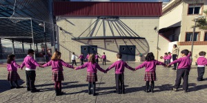

El CES Vega Media es un centro concertado donde la enseñanza es totalmente gratuita, gestionado por una cooperativa
de profesores con vocación por la formación, que forman una plantilla estable imprescindible para conseguir un verdadero trabajo de equipo.
Hemos crecido y seguimos creciendo por nuestro Proyecto Cooperativo, donde las personas y una fuerte apuesta por un proyecto de calidad,
son los elementos fundamentales de nuestra organización.
Filosofía de Centro

El C.E.S. Vega Media es un centro dinámico, con una actitud abierta al cambio, siempre buscando nuestro espacio donde compartimos muchas cosas con otras
Cooperativas pero donde también tenemos nuestra propia identidad que nos hace diferentes.
Aquí se mezclan la experiencia, madurez y estabilidad que aportan los socios más antiguos, con la frescura y la ilusión que nos traen las últimas generaciones,
pero todos con un denominador común: “Seguir trabajando por nuestro Centro, por una mayor calidad en nuestros servicios, siendo flexibles a los cambios constantes
de la sociedad para adaptarnos a ellos en las mejores condiciones, y aprovechando la creatividad y la iniciativa que sólo las personas pueden aportar”.
Por todo ello, estamos y seguiremos estando al servicio de nuestra Comunidad Educativa.